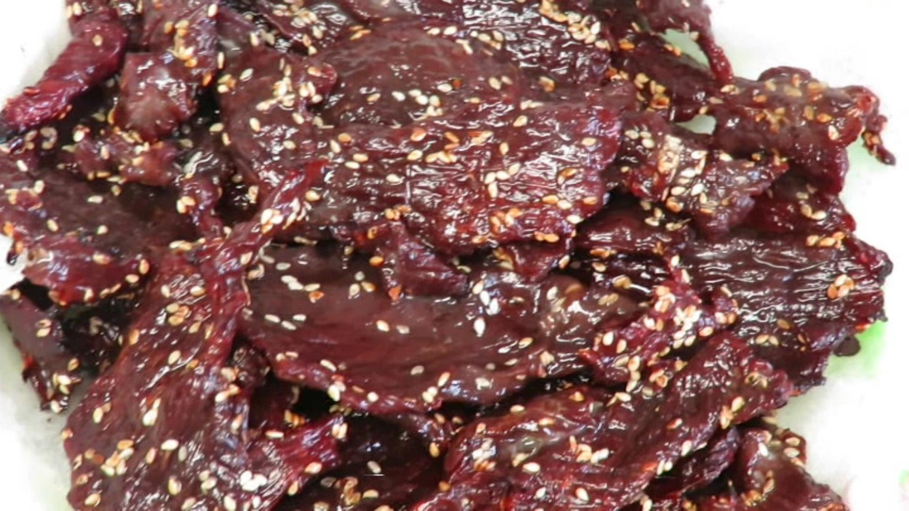
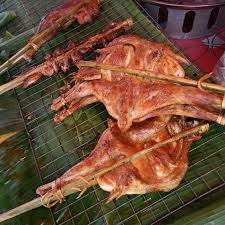

ຊີ້ສະຫວັນ
 |
ຊີ້ນສະຫວັນເປັນອີກໜຶ່ງອາຫານທີ່ຂຶ້ນຊື່ຂອງແຂວງສະຫວັນນະເຂດເມືອໄດ້ມາທ່ອງທ່ຽວແຂວງສະຫວັນສິ່ງທີ່ຂາດບໍໄດ້ກ່ອນກັບເມືອກໍ່ຕ້ອງມີຂອງຝາກສຳລັບຄົນທີ່ມາທ່ອງທ່ຽສະຫວັນກໍຕ້ອງໄດ້ຊື້ຊີ້ນສະຫວັນເພື່ອເມືອຝາກຕ້ອນພີ່ນ້ອງ.
ປີ້ງໄກ່ເຊໂນ
 |
ປີ້ງໄກ່ເຊໂນເປັນອາຫານທີ່ຂຶ້ນສື່ອິກ1ຢ່າງຂອງແຂງສະຫວັນະນະເຂດຖ້າໃຜມາສະຫວັນບໍໄດ້ກິນປີ້ງໄກ່ຖື່ວ່າບໍມາຮອດສະຫວັນ.
ປີ້ງໄກ່ເຊໂນຕັ້ງຢູ່ເມືອງອຸທຸມພອນ ກົງກັບເສັ້ນທ່ງເລກທີ 13 ແລະ ຕັດກັບເສັ້ນທາງເລກ 9 ຫ່າງຈາກຕົວເມືອງໄກສອນປະມານ 30 ກິໂລແມັດ ແລະເປັນທາງຜ່ານ ວຽງຈັນປາກເຊ